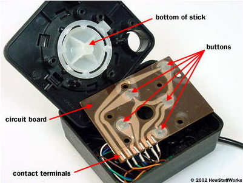
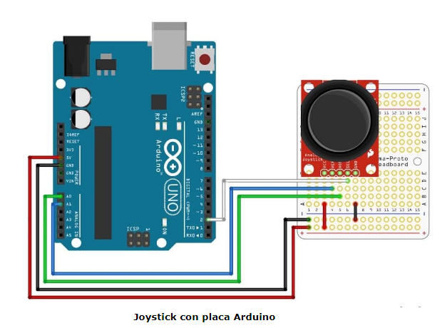
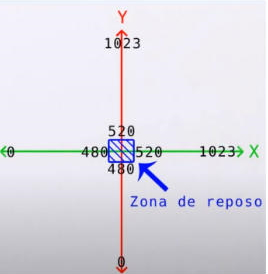
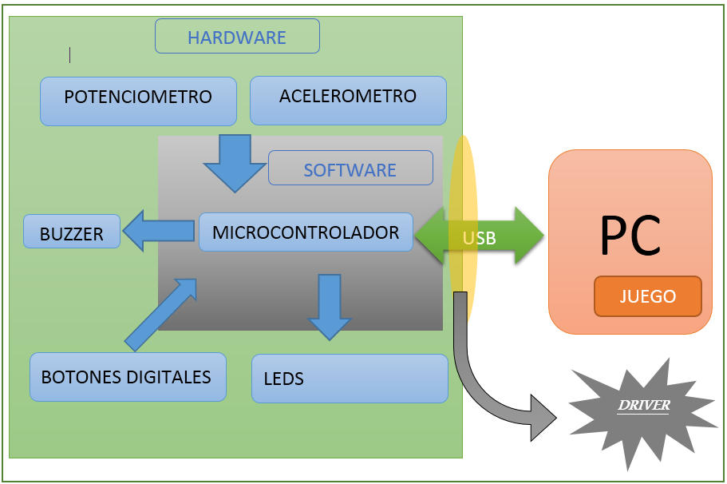
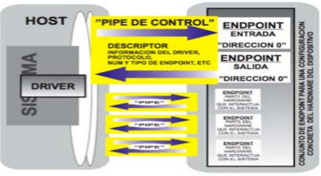
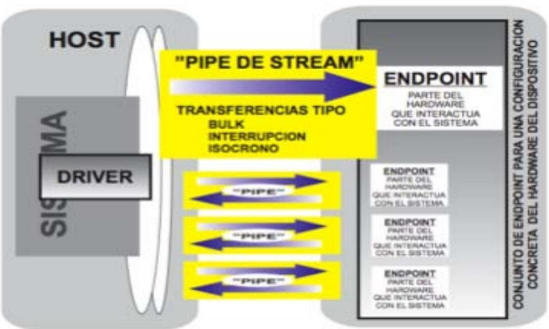
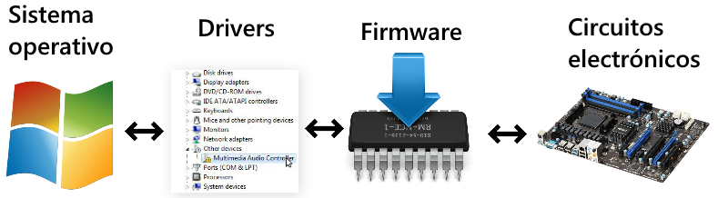

Introduccion
En este trabajo se estudiará el funcionamiento de un joystick y su
conexión con la PC a través de un Driver.
Para ello se investigarán brevemente conceptos básicos de los
movimientos físicos y electrónica de un joystick. Posteriormente, se
analizará el funcionamiento de una computadora, el funcionamiento de
drivers propiamente dicho y la transmisión de datos entre dispositivos y
la computadora.
Conceptos básicos-Joystick
Los Joysticks toman algo enteramente físico -el movimiento de una mano,
el apretar un botón- y lo traducen en algo enteramente matemático -una
cadena de 1 y 0-. El diseño más simple de joystick, usado en los
primeros juegos de consola, es simplemente un switch eléctrico
especializado. Consiste en un palo adosado a una base plástica con una
funda de goma flexible. La placa de circuito está formada por
varios”cables impresos” que se conectan a varios terminales de contacto.
Los cables comunes se extienden desde estos puntos de contacto hasta la
computadora. Los cables impresos forman un circuito eléctrico simple
compuesto por varios circuitos más pequeños. Los circuitos simplemente
transportan electricidad de un punto de contacto a otro. Cuando el
joystick está en posición neutral, cuando no está empujando de una forma
u otra, todos los circuitos individuales menos uno están rotos. El
material conductor en cada cable no se conecta del todo, por lo que el
circuito no puede conducir electricidad. Cada sección rota está cubierta
con un simple botón de plástico que contiene un pequeño disco de metal.
Cuando se mueve la palanca en cualquier dirección, se completa el
circuito: mediante la conexión entre las dos secciones de cable. Cuando
el circuito está cerrado, la electricidad puede fluir por un cable desde
la computadora (o consola de juegos), a través del cable impreso y a
otro cable que conduce de vuelta a la computadora.
-

El diseño más simple de joystick, usado en los primeros juegos de consola, es simplemente un switch eléctrico especializado. Consiste en un palo adosado a una base plástica con una funda de goma flexible. La placa de circuito está formada por varios”cables impresos” que se conectan a varios terminales de contacto. Los cables comunes se extienden desde estos puntos de contacto hasta la computadora.
Los cables impresos forman un circuito eléctrico simple compuesto por varios circuitos más pequeños. Los circuitos simplemente transportan electricidad de un punto de contacto a otro. Cuando el joystick está en posición neutral, cuando no está empujando de una forma u otra, todos los circuitos individuales menos uno están rotos. El material conductor en cada cable no se conecta del todo, por lo que el circuito no puede conducir electricidad.
Cada sección rota está cubierta con un simple botón de plástico que contiene un pequeño disco de metal. Cuando se mueve la palanca en cualquier dirección, se completa el circuito: mediante la conexión entre las dos secciones de cable. Cuando el circuito está cerrado, la electricidad puede fluir por un cable desde la computadora (o consola de juegos), a través del cable impreso y a otro cable que conduce de vuelta a la computadora.
-


-
Usaremos como ejemplo un joystick conectado a una placa Arduino.
En la imagen podemos ver lo siguiente:
Los pines de los cables rojo y negro son los del voltaje.
Los pines blanco, azul y verde son los que transmiten la información del joystick
Blanco: estado del switch (botón).
Azul: eje de las x.
Verde: eje de las y.
QUE ES UN DRIVER?
Un controlador de dispositivo o driver es un programa informático que permite al sistema operativo interactuar con un periférico, haciendo una abstracción del hardware y proporcionando una interfaz para usarlo sin necesidad de saber cómo funciona internamente el periférico. Conceptualmente se puede establecer una analogía a un manual de instrucciones que le indica al sistema operativo cómo debe controlar y comunicarse con un dispositivo en particular. Por tanto, es una pieza esencial, sin la cual no se podría usar el hardware.
Es importante resaltar que el software de controladores de dispositivos se ejecuta como parte del sistema operativo, con acceso sin restricciones a todo el equipo, por lo que resulta esencial que el controlador de dispositivo sea de confianza.
Pueden ser de dos tipos: orientados a caracteres o bien orientados a bloques, constituyendo las conocidas unidades de disco. La diferencia fundamental entre ambos tipos de controladores es que los primeros reciben o envían la información carácter a carácter; en cambio, los controladores de dispositivo de bloques procesan, como su propio nombre indica, bloques de cierta longitud en bytes (sectores).

Procesado de señales de un dispositivo de interfaz humano(HID)
Antiguamente los HID delegaban su control al sistema informático, es decir el HID enviaba señales al sistema informático y éste debía procesar, controlar, filtrar y realimentar esa información y traducirla a acciones a realizar por el sistema informático. Pero con la proliferación de los estándares USB, Bluetooth y el aumento de complejidad de los dispositivos y la necesidad de no sobrecargar el bus así como de cumplir estándares, conviene procesar las señales captadas antes de ser enviadas en un formato determinado. Para entender las alternativas para procesar la información se debe explicar qué diferencias implican los dos sistemas programables por antonomasia.
-
Microprocesador: Se entiende que un microprocesador es un circuito integrado compuesto por una serie de registros, una unidad de control, una o varias unidades aritmético-lógicas y puede tener, como es el caso de las computadoras personales, una unidad en coma flotante. Para conseguir un sistema funcional de procesamiento de datos, el microprocesador en una PC, por ejemplo, debe conectarse a través de sus buses de procesador a los distintos elementos cuyas direcciones residen en el “chipset” de la “placa madre”. Estos elementos son la memoria de programa (también conocida como memoria RAM), a los dispositivos de almacenamiento (los discos duros) y a los distintos controladores de puertos de periféricos y placas integradas (como en el caso de las placas de video).
-
Microcontrolador: al contrario que el microprocesador, pretende ser autónomo. Es decir, en el mismo encapsulado se incluyen las tres funcionalidades de una computadora, un procesador, memoria y unidades de entrada y salida (E/S). Además suelen contar, en función del modelo, distintos periféricos internos y memorias.
Dispositivo conectado con USB
Host
Está a cargo del bus, debe saber qué dispositivos están en el bus y sus capacidades, además se debe asegurar que todos los dispositivos pueden recibir y enviar los datos que necesiten. Para el caso de una computadora que actúa como host USB, el hardware y el sistema operativo, a través de los “drivers”, llevan toda la carga del bus y la aplicación informática no debe preocuparse de los detalles específicos de la comunicación con el USB. El host por tanto lleva a cabo las siguientes tareas:
- Detectar dispositivos: En el encendido, el “Hub” informa de todos los dispositivos conectados. En un proceso llamado “enumeración” el host asigna direcciones y solicita información adicional de cada dispositivo. Si un dispositivo es apagado o conectado, el host detecta el evento y lo elimina de la lista o enumera nuevamente, según el caso.
- Gestionar el flujo de datos: Varios periféricos pueden querer transmitir datos al mismo tiempo. El host divide, por tanto, el tiempo disponible en segmentos y los asigna en función de las especificaciones recabadas durante la enumeración.
- Comprobación de errores: En la transmisión de datos, el host añade bits para la comprobación de errores. Si en el dato recibido por el periférico no se corresponde el bit de comprobación de error con su cálculo, éste no enviará la señal de reconocimiento (“acknowledge”) y el host sabrá que deberá reenviar la información. Existe también, una variante que no permite la retransmisión para mantener el ratio de transmisión constante.
- Además el host puede recibir otras indicaciones de los periféricos, como que no puede enviar o recibir datos, e informar así al controlador del dispositivo sobre el problema.
- Suministro de energía: El cable USB utiliza una pareja de sus cables para suministrar +5V de tensión continua. En función de si se trata de baja o alta potencia, puede suministrar desde 100mA hasta 500mA respectivamente.
- Intercambio de datos con los periféricos: La tarea principal del host, puede comunicarse con los periféricos en los intervalos de tiempo o estar a la espera de solicitudes
Periféricos
A excepción de su función al conectarse, que informa al host para que le “enumere”, el periférico debe esperar a que el host se comunique con él, para responder. El controlador USB en un periférico maneja diversas responsabilidades del hardware en función del chip.
- Detectar comunicaciones dirigidas al chip: El dispositivo monitoriza la dirección del dispositivo en cada comunicación en el bus. Si no coincide con su dirección asignada, ignora la comunicación, si coincide, almacena esta información en el “buffer de recepción” y habilita la interrupción que indica que ha llegado información. En la mayoría de los chips esta función es realizada por el “hardware” y no necesita ser programada en el “firmware”.
- Responder a solicitudes estándar: Cuando el dispositivo se conecta a un bus USB, debe responder a determinadas solicitudes durante la “enumeración”. La especificación USB define 11 solicitudes, tales como capacidades, status y configuración. Sin embargo el “vendor” (fabricante) puede, a su vez, definir solicitudes adicionales.
- Comprobación de errores: Al igual que el host, el dispositivo añade un bit de comprobación de error. Si el dispositivo no confirma la información, el host sabrá que deberá reenviar la información. Esta función suele estar implementada en el hardware, por lo que no es necesario programarla en el “firmware”.
- Gestión de energía: El dispositivo puede ser alimentado por el bus, sujeto a límites, o puede tener su propia fuente de alimentación. Si el host entra en un estado de baja potencia, cesan las comunicaciones. Si se mantiene durante, al menos, 3 milisegundos, el dispositivo deberá entrar en estado de suspensión.
- Intercambio de datos con el host: Tras la “enumeración”, el dispositivo queda configurado para el host y este establecerá qué tipo de comunicación corresponde, y cuándo ocurre. Si el host envía datos al dispositivo, el dispositivo debe responder a cada intento de transferencia enviando un código de que se acepta la transmisión o de que está ocupado. Si el dispositivo envía datos al host, el dispositivo debe responder cada intento del host con los datos a enviar, con un indicador de que no hay datos que enviar o de que está ocupado.
Transmisión de datos entre periférico y computadora
La comunicación se basa en el intercambio de paquetes de información, y para entender este intercambio se deben definir dos conceptos: los puntos finales (“endpoints”) y las tuberías (“pipes”).
Dispositivos puntos finales: la fuente y el sumidero de datos
Todo el tráfico de un bus empieza o acaba en un dispositivo punto final (“device endpoint”). Siendo el punto final un bloque de memoria del chip del periférico que hace las veces de “buffer” para almacenar los datos recibidos o para los datos que esperan ser enviados. El host también almacena, de la misma forma, los datos. Sin embargo no posee puntos finales, pues sirve como iniciador y finalizador de la comunicación.
Una explicación sencilla sería equiparar el punto final a un buzón de correos, el cartero virtual, que representa al host, además de la dirección del dispositivo, debe saber a qué se corresponde cada buzón, si es para recoger envíos, o es para dejar la correspondencia, además debe saber de qué tipo de envío se trata, si es de control, o si es de datos, de qué tipo de datos.
Una dirección punto final consiste en un número, con un valor entre 0 y 15, y un código de dirección. Este código de dirección queda definido desde la perspectiva del host: “IN”, si envía información u “OUT”, si almacena información del host. En el caso de un punto final configurado como control, debe mantener una comunicación bidireccional, que consistiría en una pareja “IN” y “OUT” de códigos de direcciones que comparten el mismo número de punto final. Existe además otro código, “SETUP”, que hace se comporta como “OUT” especial y sirve para configurar el dispositivo. De esta forma cada transacción en el bus empieza con un paquete que contiene un número y un código de dirección.
Por tanto, cada transmisión contiene una dirección de dispositivo y una dirección de punto final. Si el dispositivo, tras comprobar la dirección del dispositivo, recibe un “OUT”, almacena esta información y habilita una interrupción, si recibe un “IN” y tiene la información lista, envía los datos y habilita una interrupción en el bus.
Tuberías:
Antes de que la transferencia ocurra, el host y el dispositivo deben establecer una tubería. Ésta se establece durante la “enumeración” y consiste en la asociación lógica entre el punto final del dispositivo específico y el software del controlador host. El host, a su vez, puede crear o eliminar tuberías según la información tomada del dispositivo. Véase que todos los dispositivos tienen una tubería de control por defecto que usa el punto final 0.
Tipos de tuberías:
-
- Tuberías de mensajes(“Message Pipe”): bidireccionales y se usan para la configuración

-
- Tuberías de flujo (“Stream Pipe”): unidireccionales y se usan para el resto de comunicaciones: transmisiones Generalistas (“Bulk”), Isócronas y de Interrupción.

Paso a paso de una conexión dispositivo (periférico) - host (anfitrión)
Como se ha comentado antes, para que una aplicación se pueda comunicar con un dispositivo, el host debe recabar toda la información del periférico y así, asignarle un controlador (“driver”). Y aunque no sea estrictamente necesario conocer todos los pasos para poder programar el firmware, sí que es interesante a título informativo. El proceso de enumeración sigue este orden, aunque suponerlo en la programación del firmware puede llevar a error, pues en función de la aplicación, puede haber variaciones:
- 1. El usuario conecta un dispositivo a un puerto USB. El hub suministrará potencia al dispositivo, que pasará a estar alimentado.
- 2. El hub detecta el dispositivo. El hub monitoriza las variaciones de tensión en las líneas de datos que se producen. El hub tiene una resistencia “pull-down” de 15-25Kohms, y el dispositivo una de “pull-up” de 900-1500ohms a D+, si es un dispositivo de velocidad completa, o D-, si es de baja velocidad.
- 3. El host recaba información del nuevo dispositivo. El hub utilizará su interrupción “punto final” para hacer llegar al host de que ha habido un evento. Entonces el host enviará la orden “Get_Port_Status” al hub, que responderá indicando que hay un nuevo dispositivo conectado.
- 4. El hub detecta la velocidad del dispositivo. Antes del reset el periférico, el hub mide en qué línea de datos se ha producido la variación de tensión y determina la velocidad. Si fuese un dispositivo de alta velocidad se determinará en fases siguientes
- 5. El hub resetea el dispositivo. Cuando el host es informado del nuevo dispositivo, su controlador envía al hub una solicitud de “Set_Port_Feature” para que se reinicie el dispositivo. El hub pondrá D- y D+ a bajo nivel durante al menos 10 ms sólo en ese puerto.
- 6. El host detecta si el dispositivo es de velocidad completa o alta velocidad. Durante el reset, si el chip del dispositivo admite alta velocidad enviará una serie de comandos “Chirp J” y “Chirp K” alternados.
- 7. El hub establece una vía de señales entre el dispositivo y el bus. El host sigue enviando solicitudes de “Get_Port_Status” hasta que el dispositivo haya salido del estado reset o se agote el tiempo de reset. Cuando el hub retira el reset del dispositivo, los registros de éste se han reseteado y está listo para responder a las transferencias de control del “punto final” 0. El dispositivo puede ahora comunicarse con el host en con la dirección por defecto 00h y puede tomar hasta 100mA del bus.
- 8. El host envía “Get_Descriptor” para solicitar al dispositivo el tamaño máximo del paquete de la tubería por defecto. Lo envía a la dirección del dispositivo 0 y “punto final” 0. Si hubiese varios dispositivos conectados al mismo tiempo, sólo uno respondería a esa dirección. En este punto empieza la fase “Status”
- 9. El host asigna una dirección. Envía una única dirección al dispositivo mediante la orden “Set_Address”. En este punto acaba la fase de “Status” y empieza la fase “Dirección”, implementando esta nueva dirección en su sistema. Esta dirección permanecerá hasta que el dispositivo se apague o se desconecte del bus.
- 10. El host recaba información sobre el dispositivo. El host envía la solicitud “Get_Descriptor” a la nueva dirección del dispositivo, a su “punto final” 0 y lee el descriptor completo del dispositivo. El host continúa recabando información solicitando uno o más descriptores de configuración especificados en el descriptor del dispositivo, y así sucesivamente con los descriptores de configuración subordinados definidos en sendos descriptores de configuración.
- 11. El host asigna y carga un controlador software (“driver”) para el dispositivo. A excepción de los dispositivos combinados. Varía en función del sistema operativo, sin embargo, tras esta selección, el sistema operativo puede comunicarse directamente utilizando las clases del driver. 12. El controlador software selecciona la configuración. Tras escoger el controlador, éste solicita la configuración a través de la orden Set_Configuration. Este paso depende totalmente de la programación escogida y el dispositivo quedará listo para utilizarse.
Retiro del dispositivo
El host es informado por el hub de un evento al deshabilitar el puerto del dispositivo. El host entonces solicita la información del hub a través de la orden “Get_Port_Status” para obtener la información específica. Ahora el sistema operativo deberá eliminar el controlador del dispositivo del gestor.
Conclusiones
La mayoría de los joystick en la actualidad cuentan con un microcontrolador que recibe la información de la posición de la palanca y el switch (botón) la transmite a la computadora mediante una conexión (USB, por ejemplo), mientras el driver la convierte en ceros y unos, e inclusive, como se vió con los joystick modernos, recibe información de la computadora y la interpreta para realizar vibraciones, encendido de luces, etc. en el joystick.
El microcontrolador del joystick se encarga de procesar y convertir la información y, gracias a esto, permite no sobrecargar innecesariamente a la computadora de dichos procesos.
Entonces, ¿ qué es un driver ?
Un driver es un controlador de dispositivo o un módulo de kernel cargable que permite y administra la interacción entre el sistema operativo y un periférico. Estos módulos se cargan al momento del arranque o por solicitud y se descargan a solicitud. Hay que tener en cuenta que el software del mismo se ejecuta como parte del sistema operativo, es decir, tiene acceso a todo el dispositivo.
Pueden ser de dos tipos: orientados a caracteres o bien orientados a bloques, constituyendo las conocidas unidades de disco. La diferencia fundamental entre ambos tipos de controladores es que los primeros reciben o envían la información caracter a caracter; en cambio, los controladores de dispositivo de bloques procesan, como su propio nombre indica, bloques de cienta longitud en bytes (sectores).
¿ Y cómo funciona ?
El driver es un traductor entre el "idioma" del dispositivo y el de la computadora. Por ejemplo, cuando el sistema operativo necesita algo del dispositivo, le dice al driver lo que necesita, el driver lo interpreta y traduce al lenguaje del dispositivo, ejecutando éste la acción. Lo mismo pasa con el camino inverso, el dispositivo le transmite la información al driver (por ejemplo de que la palanca del joystick se movió al cuadrante superior izquierdo y efectuó un disparo) y el driver traduce y pasa la información al sismeta operativo.
